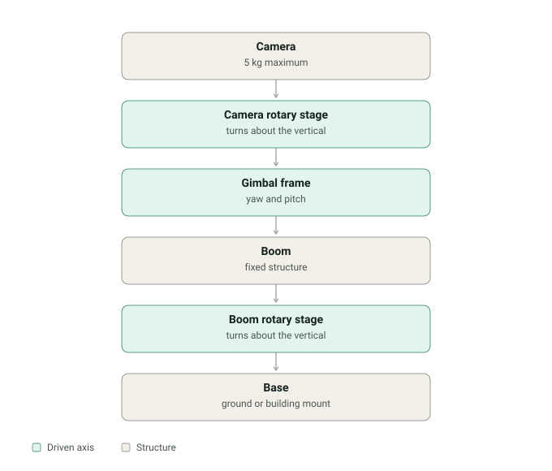
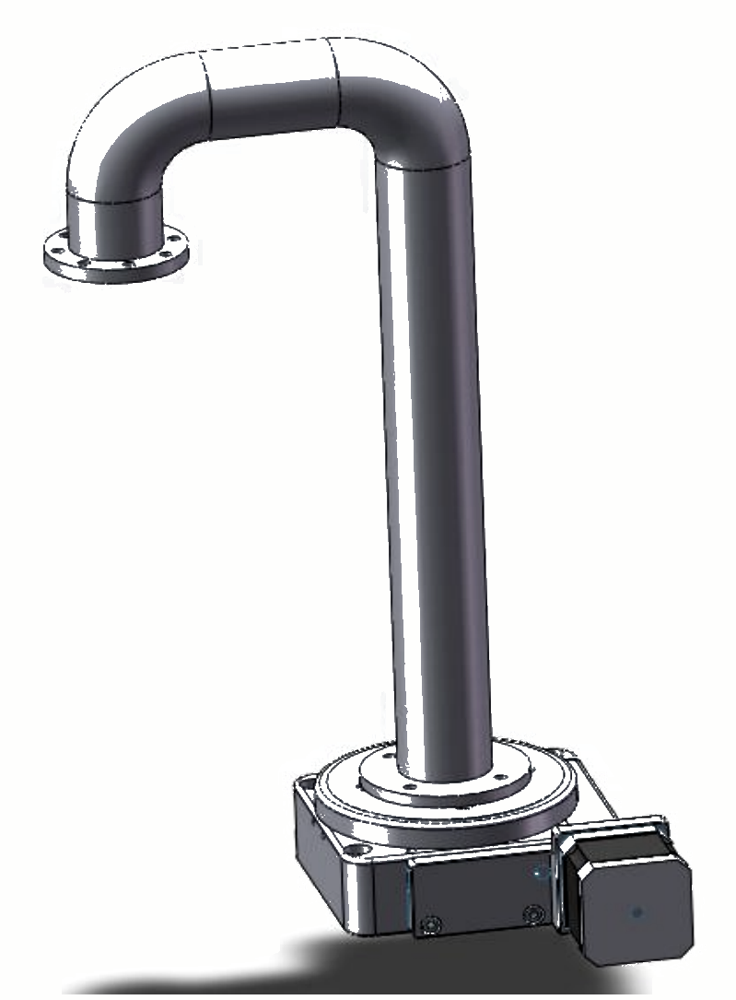
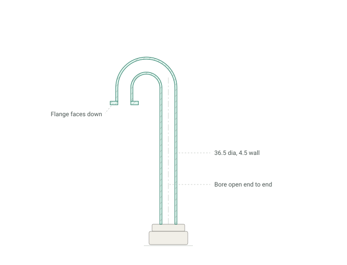
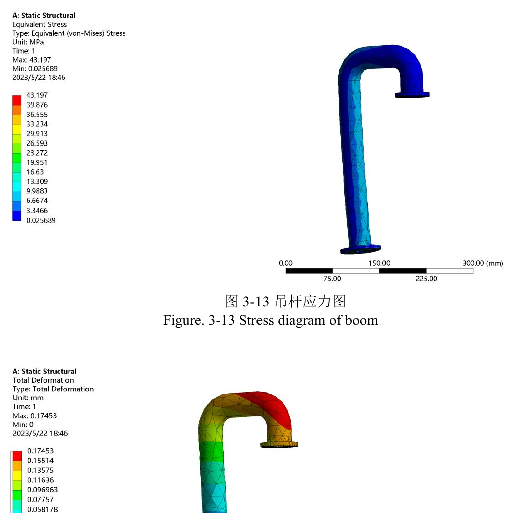
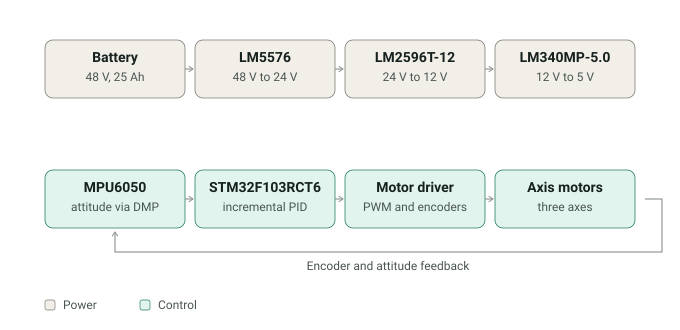

A camera stage for unattended outdoor monitoring of farmland and forest. Units on the market were heavy, imprecise, and short-lived, so the brief was a three-axis gimbal that would hold its aim through a long service life outdoors. I did the whole machine: the mechanism, all three drivetrains, the structural analysis, the power electronics and the control software.
Three axes, three different problems

The interesting part of a three-axis machine is that the axes are not three copies of the same thing. Each one carries a different inertia, so each was sized from its own load estimate rather than from a single catalogue choice — and the answers came out two orders of magnitude apart.
| Axis | Load torque | Motor | Output |
|---|---|---|---|
| Camera rotary stage | 0.22 N·m 10 kg, 17.4 rad/s² |
70LYX02, 0.5 N·m peak | 20 rpm through a 65:1 worm |
| Gimbal frame, yaw and pitch | 1.09 N·m 0.078 kg·m², 14 rad/s² |
70LYX06, 2 N·m peak | 30 rpm, 2.12 A at 22.99 V |
| Boom rotary stage | 34.17 N·m 70 kg carried |
130LYX02, 5.5 N·m peak | 6 rpm, 113.9 N·m through a 65:1 worm |
Both rotary stages use a worm pair rather than a spur or belt reduction. A worm holds its position when unpowered, which is what a camera left outdoors between commands actually needs.
Mounting the camera
Before any of the drives could be sized, the camera had to attach to something. I compared three ways of holding it. A fixed shell is simple and secure but only fits one camera body. An automatic clamp, using a rack and ratchet so both jaws close together, is the most convenient to use but adds a mechanism inside a part that is already carrying the payload. A clamping base sits between them: the camera bolts to a quick-release plate through its own tripod thread, and the plate slides into the clamp.
I chose the clamping base and specified a K50 universal mount, because it takes any camera that accepts a standard quick-release plate. That decision fixed the payload interface, which is what let me put a number on the carried mass and start sizing motors.
Rotary stage
This is the part I am most pleased with. The worm wheel is not just a reduction — it is also the bearing surface the whole platform turns on. The wheel is clamped to a centre sleeve that runs in two pairs of bearings, and the camera platform sits directly on top of it, so the drive and the support are the same assembly.

The pair was designed to surface contact fatigue strength: an involute ZI worm to GB/T 10085, single start, 45 steel with the flanks hardened to 45–55 HRC, running on a cast tin-phosphor bronze wheel. Allowable contact stress came out at 216.1 MPa after a life factor of 0.81 on 5.6×107 cycles. Centre distance 56.5 mm, worm pitch diameter 27.5 mm, wheel 85.5 mm.
Boom
Everything hangs off the boom, so it sets both the pointing accuracy and most of the weight. It is a hollow tube throughout, 36.5 mm outside diameter with a 4.5 mm wall, formed as a gooseneck so the camera sits clear of the column.



The peak stress reaches 17% of yield. Worth saying plainly, because it explains the proportions. The boom looks heavy for what it carries, and it is — but a pointing mechanism is sized by how far it bends, not by how much it can take before it breaks. At 0.17 mm of tip deflection the camera holds its aim, and the strength margin is what falls out of a section stiff enough to do that.
Shafts were checked against reversed bending fatigue in 45 steel, with a fatigue limit of 60 MPa against 355 MPa yield and 640 MPa ultimate. Bearings were checked at an equivalent dynamic load of 105.4 N.
Power and control

The machine runs off a 48 V 25 Ah lithium pack, chosen so it can hold full load outdoors without a mains feed. Three regulator stages step that down: an LM5576 buck to 24 V, an LM2596T-12 to 12 V, and an LM340MP-5.0 linear to 5 V for the logic.
An STM32F103RCT6 runs the control. Attitude comes from an MPU6050 through its on-chip digital motion processor, so the sensor fusion does not sit in the main loop, and the motor drivers close the speed loop with encoders. Axis control is incremental PID rather than positional: it works from the last three errors instead of an accumulated sum, which keeps the arithmetic off the MCU and means a disturbance leaves no integral term to unwind.